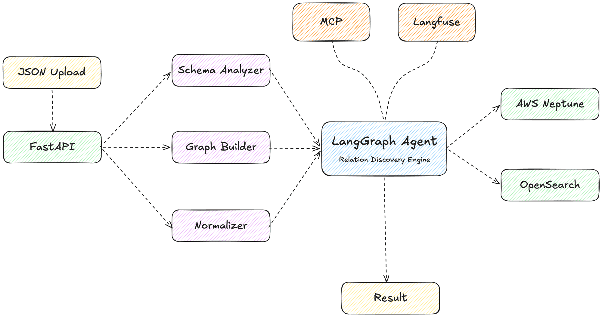
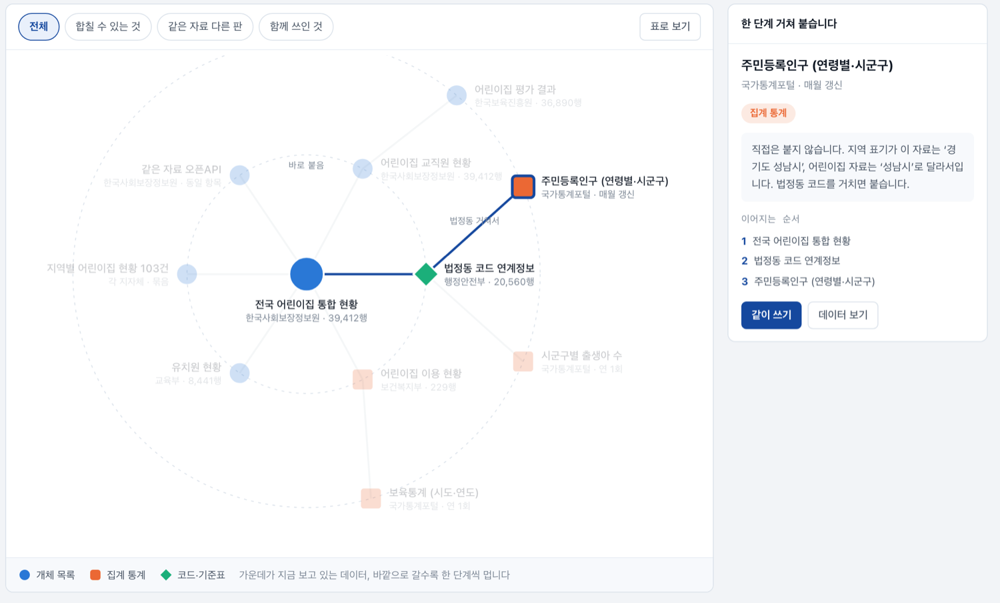
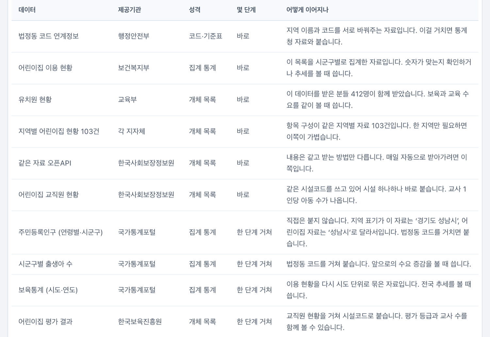

S배경
쓸만한 데이터는 조직 밖에 넘칩니다. 문제는 가져와도 "이게 무슨 데이터고 우리 데이터와 어떻게 연관되는지"를 파악하는 일이 전부 수작업이라는 것. 스키마와 명세만으로는 데이터의 의미와 쓰임을 알 수 없어 탐색도 연결도 사람의 도메인 지식에 의존합니다.
이 서비스는 시스템이 데이터를 읽어 의미 정보(액티브 메타데이터)를 만들고, 그 위에서 데이터셋 간 관계를 자동으로 판정해 그래프로 쌓습니다. 새 데이터셋이 등록되면 사람이 손대지 않아도 연결 가능한 데이터셋이 검색되는 것이 목표입니다.
T역할
A수행 업무

01관계 생성 서비스 백엔드 · AI 파이프라인
- 데이터셋 등록 시 LLM이 설명·키워드·컬럼 의미·도메인을 추출해 그래프(Neptune RDF)와 검색 인덱스(OpenSearch)에 적재하는 메타데이터 자동 생성 파이프라인 구축
- 규칙 → 통계 → LLM 검증 3단계로 데이터셋 간 관계(결합 가능 · 의미 연관 · 보완)를 판정하고, 근거와 신뢰도를 함께 그래프에 저장하는 관계 생성 파이프라인 구현
- 통합 카탈로그 변경 감지 → 신규·변경분만 증분 관계 생성 → 결과 환류 자동화, 사용자 데이터셋 기준 연계 가능 데이터셋 검색 API 제공
- Neo4j → AWS Neptune(RDF/SPARQL) 마이그레이션, 표준 분류체계 기반 도메인 자동 분류, Langfuse 프롬프트·트레이스 관리, pytest 회귀 테스트

판정 근거 + 경유 경로02성능 검증 · 공인시험
- 3차년도 성능지표 "유사 속성 탐지율" 시험 설계·수행 — 공개 벤치마크(Valentine) 실세계 쌍을 편입해 12종으로 확장, F1 0.87로 목표 85% 달성
- LLM 관계 판정 품질을 트레이스 기반 정밀도·재현율로 정량 평가하고 근거 기반 판정 규칙으로 개선
- 공인시험(KGcT) 시험항목 3건의 규격서·시험 구성 설계
03표준 · 설계 문서
- 공공데이터포털 목록 96,110건 전수 분석과 사용자 시나리오로 데이터셋 관계 유형 11종 정의 (DCAT 3 · PROV-O 표준 어휘 매핑)
- 액티브 메타데이터 DCAT 응용 프로파일 표준 초안 검토 — 검증 결과 · 매핑 규칙 · 도메인 특화 방향 회신
- 3사 컨소시엄 연동 백엔드 설계 — 용어 정의 대조 · 갭 분석, ERD · 테이블/인터페이스 정의서

관계 유형 · 연결 단계!트러블 슈팅
관계가 거의 완전 그래프가 됐다 — LLM 판정에 근거를 요구하다
정확도상황
병원 도메인 9개 데이터셋, 36쌍을 전수 판정했습니다. 정답 10개 중 8개를 잡았지만(재현율 80%) 24쌍을 관계로 판정해 정밀도 33% — 그래프가 거의 완전 그래프에 가까워졌습니다. 시각화만 봐서는 원인이 보이지 않았습니다.
해결
Langfuse에 남은 판정 트레이스 150건을 정답과 쌍 단위로 대조했습니다. 오탐 16건의 판단 이유가 전부 "실제 서비스에서 함께 쓸 수 있다"는 가상 시나리오였고, 확신도 0.85 미만 18건 중 16건이 오탐이었습니다. 임베딩 유사도는 36쌍 전부 게이트를 통과해 변별력이 없었습니다. 프롬프트의 질문을 "함께 쓸 수 있는가"에서 "근거가 데이터 안에 있는가"로 바꾸고, 근거 유형(공유 키 · 값 중첩 · 동일 개체 · 병렬 스키마)을 열거형으로 강제해 시나리오만 있는 판정은 저장에서 제외했습니다. 확신도 임계값 0.7→0.8, 2회 판정 다수결을 더했고, 임계값만으로도 오탐 16→2(시뮬레이션), 정답 보정 시 정밀도 1.00 / 재현율 0.73이었습니다.
알게 된 점
LLM에게 가능성을 물으면 항상 예라고 합니다. 근거를 고르게 해야 판정이 재현됩니다. 그리고 지표는 그림이 아니라 트레이스로 재야 합니다.
트레이스 150건 전수 대조
정답 보정 시 정밀도 1.00 / 재현율 0.73
시나리오만 있는 판정은 저장 제외
AI가 제안한 관계 유형을 데이터로 기각했다
설계 검증상황
관계 유형 정의서를 쓸 때 AI가 먼저 후보를 제안했습니다 — 시점 계열, 공간·시간 중첩, 동일 제공기관, 동일 분류. 그럴듯했지만 근거는 "그럴 것 같다"였고, 컨소시엄 합의는 "기능에서 역산하지 말고 사용자 시나리오부터"였습니다.
해결
채택을 보류하고, 두 포털 사용자가 실제로 밟는 경로 6개를 먼저 세운 뒤 목록개방현황 96,110건 전수 통계로 후보를 하나씩 검증했습니다. 목록명에 연도가 든 건 0.7%인데 파일명 날짜 접미는 85.9% — 시점 계열은 데이터셋 관계가 아니라 파일 버전이라 격하. 공간·시간범위 채움률 6.2% / 4.8% — 94%가 진입조차 못 하니 기각. 분류체계 동일은 3.37% — 관계가 아닌 필터. 대신 데이터가 보여준 지배 구조(표준 주제의 기관별 인스턴스 11.8%, 파일·API 중복 598쌍)에서 새 유형 3종을 신설해 데이터셋 8종 + 파일·컬럼 3종을 확정했습니다.
알게 된 점
AI가 몇 초에 내놓은 답은 출발점이지 결론이 아닙니다. 검증 데이터와 출처를 붙이지 못하는 유형은 정의서에 넣지 않았습니다.
AI 제안 후보 전부 기각·격하
시점 계열 → 파일 버전으로 격하
전 유형 표준 어휘(DCAT 3 · PROV-O) 매핑
같은 요청인데 결과가 매번 달랐다 — 비결정성 추적
재현성상황
성능지표 시험을 준비하는데 같은 데이터셋에 같은 요청을 보내도 매칭 결과가 실행마다 조금씩 달라졌습니다. 공식 시험은 누가 언제 돌려도 같은 수치가 나와야 하는데, 결과가 흔들리면 측정값 자체를 신뢰할 수 없었습니다.
해결
호출 경로를 따라 추적한 결과, 임베딩용 값 샘플링(테이블당 20행)이 전역 random 상태에 의존해 앞선 요청 횟수에 따라 샘플이 달라지는 것을 찾았습니다. 고정 시드의 로컬 RNG로 격리해 동일 요청 = 동일 결과를 보장하고, 반복 실행 완전 일치를 확인한 뒤에야 공식 측정을 진행했습니다.
알게 된 점
ML 서비스에서 "결과가 이상하다"의 원인이 모델이 아니라 파이프라인의 사소한 비결정성일 수 있다는 것. 재현성은 성능보다 먼저 확보해야 하는 시험의 전제 조건입니다.
반복 실행 완전 일치 확인
요청 순서에 따라 결과 변동
공식 측정의 전제 조건
시험을 쉽게 만들지 않았다 — 벤치마크 12종 확장 설계
평가 설계상황
3차년도 성능지표는 벤치마크를 12종으로 확장해 측정해야 했습니다. 후보 쌍 상당수는 두 테이블의 컬럼명이 동일하게 정렬돼 있어 전부 만점 — 시험으로서 변별력이 없었습니다. 쉬운 쌍으로 채우면 숫자는 좋아지지만 그 숫자는 아무것도 증명하지 못합니다.
해결
스키마 매칭 평가의 준거 논문(Valentine, ICDE 2021)이 지적한 "비공개 구현 · 통일된 정답 없음 · 재현 불가"를 피하기 위해 공개 정답이 있는 벤치마크를 편입했습니다. 만점 나오는 4종은 부록 참고치로 내리고, 컬럼명이 서로 달라 의미 기반 매칭이 필요한 실세계 쌍 6종을 넣어 12종을 구성했습니다. 수동 후처리로 남아 있던 점수 임계값은 서버 파라미터로 승격하고 0.70~0.90 스윕으로 둔감함을 확인한 뒤 0.90을 채택해(movies2 오탐 5→1) F1 평균 0.8698로 목표를 달성했습니다.
알게 된 점
지표의 목적은 통과가 아니라 방어입니다. 제3자가 재현할 수 있는 어려운 시험을 스스로 설계하는 것이 결국 그 결과를 지키는 일입니다.
컬럼명 이질 실세계 쌍 6종 편입
부록 참고 측정치로만 수록
재현성 확보 후 공식 측정
R결과
- 관계 생성 서비스 백엔드·AI 파이프라인 구현 — 데이터셋 등록부터 관계 생성·연계 검색까지 자동화, 공개 SW로 공개
- 유사 속성 탐지율 F1 0.87 — 3차년도 성능지표(85%) 공식 달성
- 관계 유형 정의서 11종, 컨소시엄 연동 설계서(ERD · 테이블/인터페이스 정의서), 표준 초안 검토 회신
- 특허 출원 (제1발명자) — 「액티브 메타데이터와 그래프 데이터베이스를 활용한 신규 데이터의 잠재적 연관성 자동 탐색 및 관계 확장을 위한 장치」 (10-2026-0068848, 2026.04)
W기술 선정 이유
+회고 — 다시 한다면
- 관계 정답셋을 처음부터 데이터 안의 근거(공유 키 · 값 중첩)로 정의했을 것 — 상식 기반 정답이 판정 기준까지 흐리게 만들었다
- 영어 중심 공개 벤치마크로 시험했는데, 한국어 컬럼명 데이터셋을 초기부터 구축해 실사용 도메인 성능을 함께 추적했을 것
* 실제 시스템 코드는 과제 절차에 따라 공개SW로 공개되며, 위 데모는 UI/기능 재현입니다.